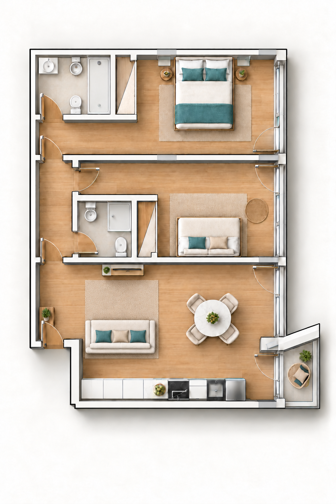

Escolha o que quer ajustar.
Prepare vários espaços de uma vez.
Cenários de demonstração · os equipamentos Cloud não são alterados.
A sua cidade e o ambiente da casa.
De dia, os estores abertos deixam entrar luz natural. À noite, uma divisão com a luz apagada fica escura.
Os candeeiros e estores associados ao Cloud são reais. Os equipamentos sem associação e os cenários continuam em simulação; os cenários preservam os equipamentos reais.
Guarde as divisões, nomes, posições, luzes, estores, preferências da MeteoNL e configurações Shelly deste navegador.
Associe sensores, candeeiros, estores e o carregamento do carro. Consulte as leituras e controle os equipamentos no popup de cada divisão ou nos controlos gerais. Ligação direta à Shelly Cloud, também em GitHub Pages.
Sem este check, a chave fica apenas nesta sessão. Não é necessária a palavra-passe da sua conta.
Na app Shelly: Definições do utilizador → Authorization cloud key. Copie a chave e o Server URI da mesma página.
Em cada dispositivo: Definições → Informação do dispositivo → Device ID. O Shelly tem de estar na sua conta Cloud. Para os estores, deve usar o modo cover/roller; para candeeiros, indique a saída switch ou light. O canal começa em 0.
Use a mesma conta Cloud. No Shelly EM, pode repetir o mesmo ID no consumo e no interruptor: o canal de medição e o canal do relé são independentes. Deixe o contador separado vazio para usar o total do medidor de consumo.
Ajuste para ignorar o consumo em espera. A animação segue o consumo medido, não apenas o estado do interruptor. Potência em kW e total acumulado em kWh.
Associe sensores da sala, do quarto principal e da cave pelo Device ID. A cave também aceita o Shelly Door Window 2. Usa a mesma conta Cloud. Os valores aparecem no popup da divisão. Deixe o ID vazio para retirar a associação.
Só consultamos leituras. Sensores a pilhas podem estar em repouso: a Cloud pode devolver uma leitura anterior, não uma nova medição.
Use a mesma conta Cloud acima. Introduza o Device ID do Shelly que alimenta cada candeeiro, o canal (começa em 0) e o tipo preferido: switch para relé/tomada, light para luz/dimmer. A app deteta a saída real no canal indicado; não muda de canal automaticamente. Deixe o ID vazio para retirar a associação.
Os três candeeiros associados são controlados pela Shelly Cloud no popup da divisão e em Ligar todas/Apagar todas. Guardar ou consultar não liga nem desliga equipamentos.
Deixe o ID vazio para manter esse estore em demonstração. O mesmo dispositivo pode usar canais diferentes.
Consultamos posição, movimento, ligação e, quando o modelo disponibiliza, potência, energia, tensão, corrente, temperatura e erros. Campos ausentes aparecem como «Não disponível». Uma consulta não move os estores.
Escolha o nome que aparece no banner e nos controlos.